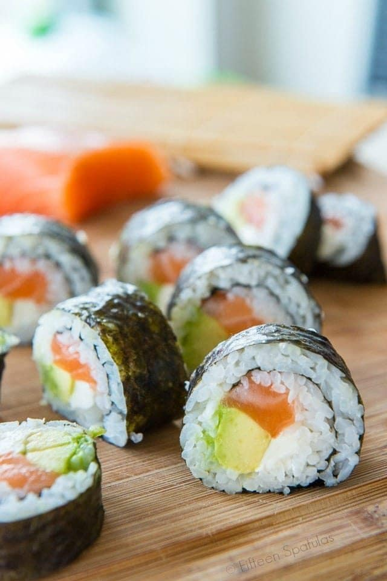

Home
Sushi

Description
Homemade Sushi is so much cheaper than at the restaurant. Plus, it's easy and fun to make your own rolls at home, so you can put all your favorite ingredients into your perfect custom roll — here's how!
Prep time - 15 mins
Ingredients
Thai tea base
- 6 sheets seaweed
- 1 batch prepared sushi rice
- 1/2 lb sashimi-grade raw salmon
- 4 oz cream cheese
- 1 avocado
- soy sauce for serving
Steps
- Place the seaweed on a bamboo mat, then cover the sheet of seaweed with an even layer of prepared sushi rice. Smooth gently with a rice paddle.
- Layer salmon, cream cheese, and avocado on the rice, and roll it up tightly. Slice with a sharp knife, and enjoy right away with soy sauce.
Original recipe at fifteenspatulas.com